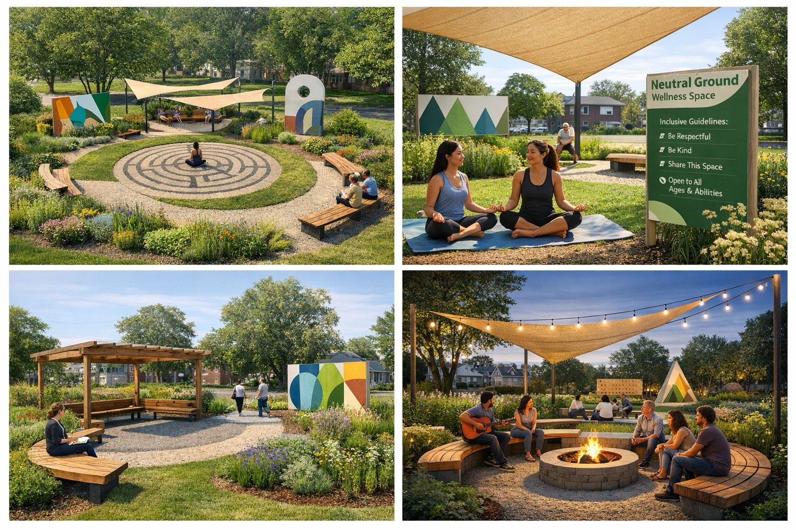
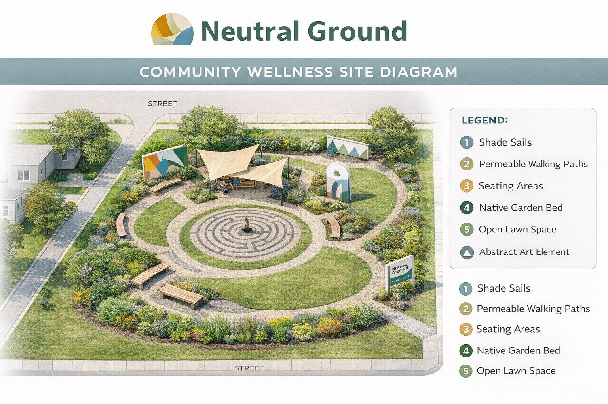
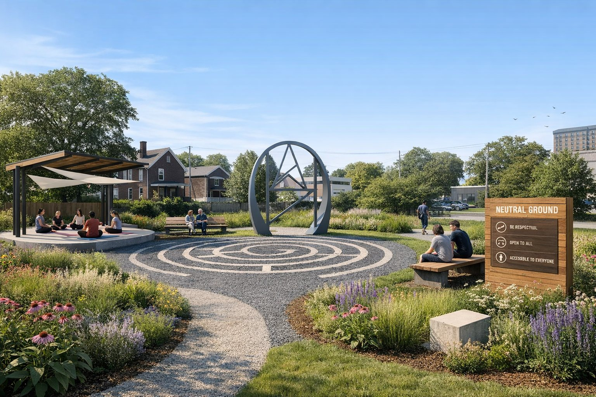

Transforming vacant land into therapeutic community green spaces accessible to all



Transform vacant land into therapeutic, cultural and healing spaces accessible to all communities.
The Neutral Ground Community Wellness Initiative aims to transform unused vacant land in the North, South, East, and West regions of Syracuse into therapeutic community green spaces. These areas will be designated as neutral public environments intended for healing, cultural unity, mentorship, and neighborhood cooperation.
Local residents, youth groups, and community leaders will have shared, equal access to the sites without political, territorial, or neighborhood bias. Investment in this initiative will support citywide peace-building, trauma recovery, and community connection.
Unused vacant land across neighborhoods
Need for shared neutral spaces
Youth need positive environments
Green space supports mental wellness
These spaces will offer walking paths, outdoor seating, garden spaces, cultural art zones, and areas for meditation and guided community activities.
Permeable walking paths and comfortable seating areas throughout the space
Native garden beds and open lawn spaces for connection with nature
Cultural art zones with abstract art elements for community expression
Areas for meditation, reflection, and guided community activities
Shade sails and covered areas for year-round usability
Select lots & engage residents
Prepare land & install elements
Launch programs & youth activities
Stewardship & evaluation
$25,000 - $40,000
Site preparation, paths, seating, and structures
$10,000 - $20,000
Native plants, garden beds, and green elements
$5,000 - $15,000
Community activities, art, and ongoing engagement
$40,000 - $75,000
United Society Affiliates respectfully proposes a partnership with the City of Syracuse to secure site access, development resources, and ongoing collaboration.
Access to unused vacant land across Syracuse neighborhoods
Assistance with infrastructure and site development
Ongoing collaboration for site safety and upkeep
Investment in this initiative will support citywide peace-building, trauma recovery, and community connection.